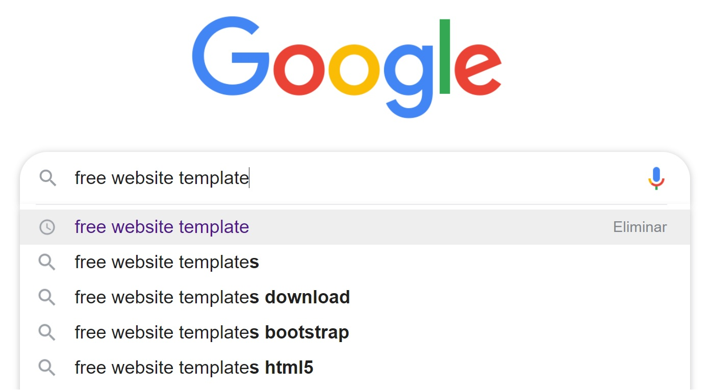
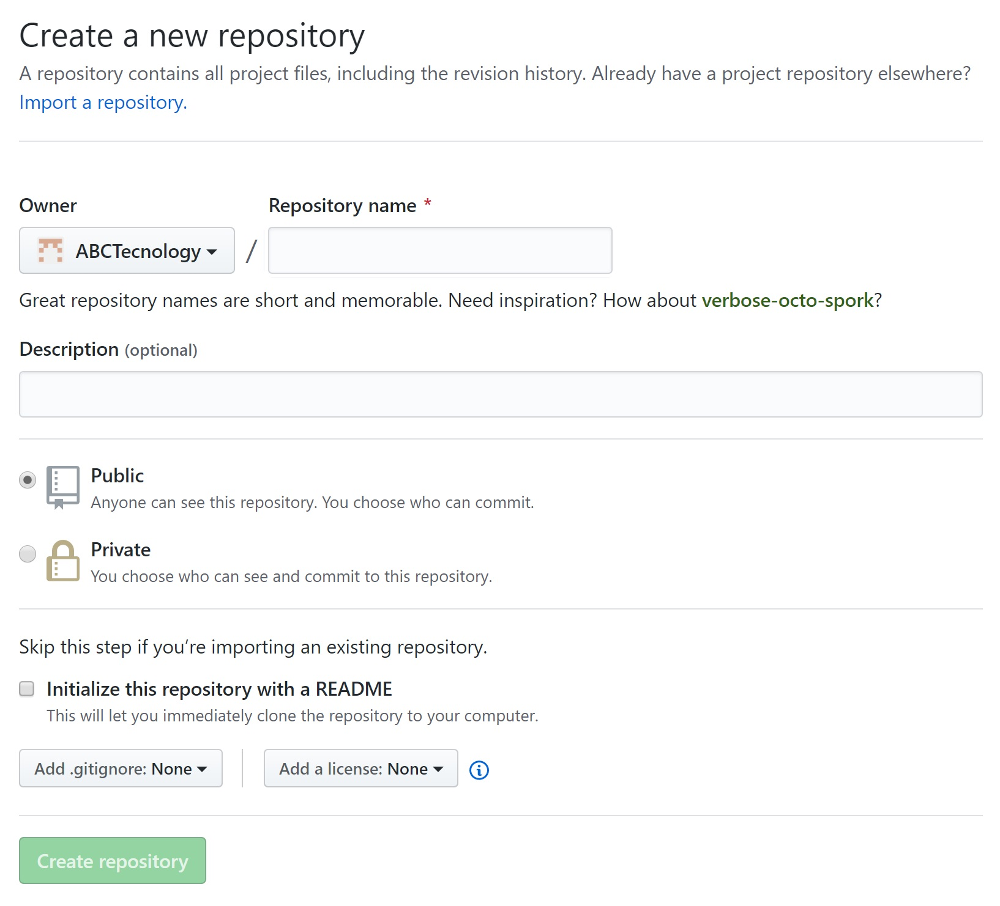
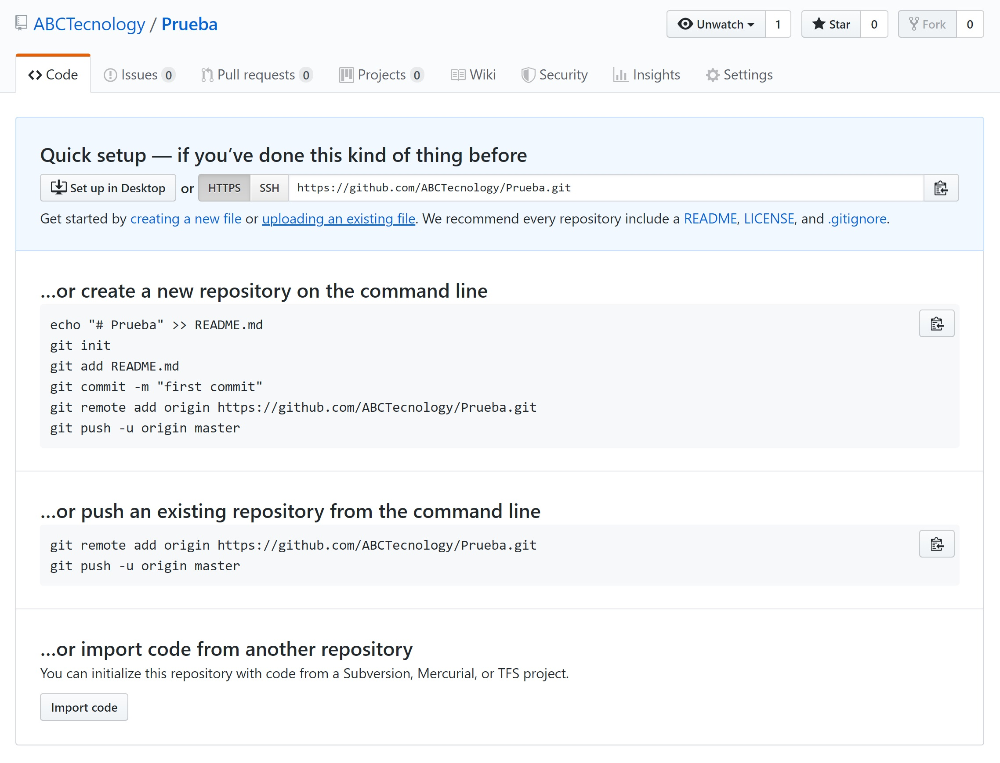
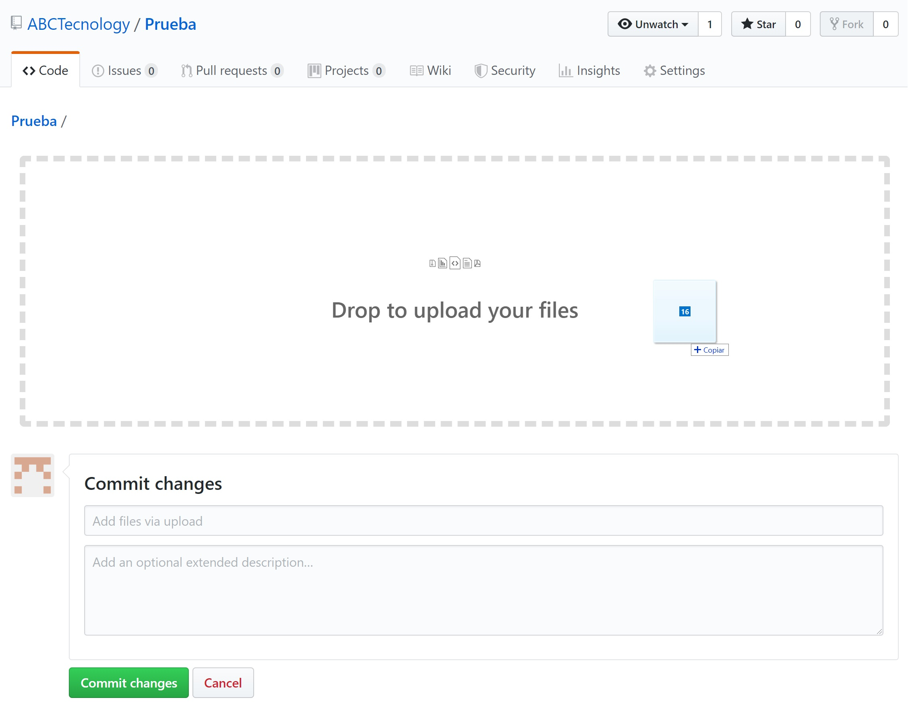

1. Abrir un buscador y buscar “Free website templates”. Elegir un template y descargar la carpeta con los códigos y las imágenes predeterminadas.
2. Para crear un repositorio en GitHub, hay que seleccionar el botón “Create a New Repo”, de la barra de herramientas, habiendo entrado a GitHub con su cuenta:
3. Ahora habrá que llenar dos datos: Nombre del repositorio Descripción del repositorio (opcional)
4. Crear un proyecto: Al crear un repositorio, inmediatamente nos llevara a él. Como el proyecto no tiene nada en su interior, no nos va a mostrar más que una ayuda para subir archivos y proyectos.
5. Subiremos la carpeta descargada, clicando en “uploading an existing file”
6. Luego arrastraremos las carpetas descargadas dentro del recuadro mostrado y clicaremos en “Commit changes”
7. Finalmente tendremos los archivos en el repositorio listos para ser modificados
1. Encabezado de la página web Para comenzar a crear una nueva página web HTML, se debe abrir un editor de texto, como el Bloc de notas. Para nuestra, como ya mencionamos utilizamos un Template cuya fuente se menciona al final de esta documentación. Una vez que se haya abierto el nuevo archivo, se puede comenzar escribiendo este código.
<!DOCTYPE HTML>
<HTML>
<HEAD>
<TITLE> DEBES ESCRIBIR EL TITULO DE TU WEB </TITLE>
<META name="description" content="donde escribirás una breve descripción de la página">
<META name="keywords" content="Aquí escribe las palabras clave separadas por una coma">
</HEAD>
<BODY>
</BODY>
</HTML>
<BODY> es la parte del documento que contiene la parte "visible" del sitio:
Hola <br> esta es una prueba de mi web.
<u>te permite escribir con subrayado</u>
<i>te permite escribir en cursiva</i>
<b>te permite escribir en negrita</b>
<del>te permite cancelar un texto<del>
<span style="color:blue"> aqui escribe el texto </span>
O
<span style="color:#ffff45"> aqui escribe el texto </span>
<span style="font-family:verdana"> aquí escribe tu texto </span>
O
<span style="font-family:’Comic Sans MS'"> aquí escribe tu texto </span>
<span style="font-size:12px">aquí va el texto </span>
<img src="immagine.gif" alt="descripción de la imagen" height="42" width="42">
Se utilizó un Template de la pagina https://colorlib.com/ basado en el lenguaje HTML5 y CSS.